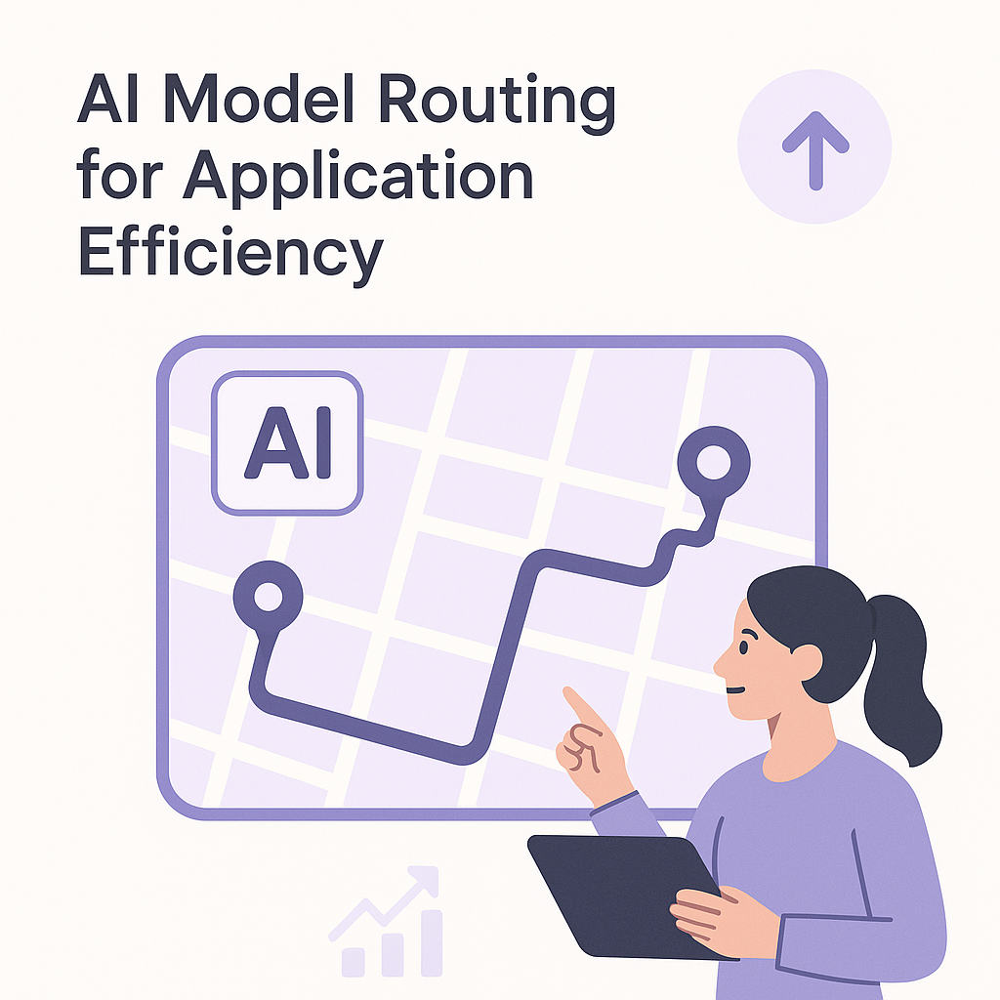

Publishing Recommendation
reviseThe drafted posts generally align with current trends but need refinement to reduce promotional tone and increase credibility. Some posts, like those on robotics and AI integration, effectively highlight industry trends but could benefit from more evidence-based insights. Ensure all claims are well-supported and maintain a practical tone to enhance trustworthiness.
LinkedIn Posts (10)
1. China’s robots race ahead ★ Purands solution · high priority
CTA: How do you see robotics influencing your customer engagement strategies?
Alternative hooks
- In China, robotics is not just advancing; it's transforming commerce across APAC.
- When robotics meets commerce, customer engagement gets a whole new face.
- China's robotics revolution is reshaping APAC's commerce dynamics.
Research behind this post (sources, summaries & confidence)
China’s robots race ahead conf 0.90 · APAC commerce dynamics
The rapid advancement of robotics in China underlines the region's innovation in automation, impacting commerce dynamics and retention strategies in APAC.
Sources & what I took from each
- Advancements in robotics: China is a global leader in robotics innovation, with significant investments in developing advanced robotics technologies. ↗ read source
- Impact on APAC commerce: The integration of robotics into commerce in APAC is transforming business operations and customer interaction models. ↗ read source
Examples
- Chinese companies like DJI and Xiaomi are leading the robotics revolution with innovative consumer and industrial robots.
Recent news
- Recent reports from the World Robotics Conference highlight China's dominance in the robotics sector.
Original trend links
Risks / caveats
- Dependence on robotics may lead to job displacement and require new skills training for the workforce.
2. Enterprise AI's real risk isn't autonomous agents. It's the complexity between them. ★ Purands solution · high priority
CTA: How are you tackling AI integration challenges in your organization?
Alternative hooks
- Enterprise AI's real challenge? It's not about the agents themselves.
- Integrating AI systems is where the real battle lies.
- Complexity in AI integration can derail marketing strategies.
Research behind this post (sources, summaries & confidence)
Enterprise AI's real risk isn't autonomous agents. It's the complexity between them. conf 0.85 · AI industry
This discussion emphasizes the operational complexities enterprises face when integrating multiple AI systems, impacting the effectiveness of retention marketing efforts.
Sources & what I took from each
- Complexity in AI system integration: Integrating multiple AI systems poses significant challenges, as each system may have different protocols and data handling requirements. ↗ read source
- Operational challenges in AI deployment: Enterprises face operational hurdles when deploying AI systems at scale, particularly in ensuring seamless interaction between disparate AI agents. ↗ read source
Examples
- Large corporations like IBM and Oracle are investing in solutions to manage AI complexity and improve system integration.
Recent news
- Industry reports indicate that many companies are struggling with the integration of AI systems, highlighting the need for better orchestration solutions.
Original trend links
Risks / caveats
- Failure to address integration issues may lead to operational inefficiencies and diminished AI benefits.
3. Orchestration is the new challenge for CX in the age of AI agents ★ Purands solution · high priority
CTA: How are you managing the orchestration of AI agents in your business?
{kind=link}
Image prompt · isometric-flat
Caption: Orchestrating AI agents for seamless customer experience.
Alternative hooks
- Ever wonder why some AI-powered customer interactions feel disjointed?
- Deploying AI agents is just the start; orchestrating them is the real challenge.
- AI agents are growing, but so are the headaches of integrating them across platforms.
Research behind this post (sources, summaries & confidence)
Orchestration is the new challenge for CX in the age of AI agents conf 0.80 · AI industry
As enterprises integrate AI agents, the complexity of orchestrating these systems across various channels becomes paramount. This is crucial for retention marketing as businesses aim to provide seamless customer experiences.
Sources & what I took from each
- Increased deployment of AI agents: There has been a notable increase in the deployment of AI agents across various industries, driven by advancements in AI technologies and the need for enhanced customer engagement. ↗ read source
- Challenges in system architecture and orchestration: The complexity of integrating AI agents into existing systems and ensuring seamless operation across multiple channels is a recognized challenge in the industry. ↗ read source
Examples
- Companies like Salesforce and Microsoft are actively working on solutions to better orchestrate AI agents within their CRM platforms.
Recent news
- Recent discussions in tech forums highlight the growing concern over the orchestration of AI systems as companies scale their AI deployments.
Original trend links
Risks / caveats
- Improper orchestration can lead to fragmented customer experiences and operational inefficiencies.
4. Railway's AI-native cloud infrastructure funding ★ Purands solution · high priority
CTA: How do you see AI-native infrastructure reshaping retention marketing?
Alternative hooks
- Railway just shook the cloud world with a $100 million investment.
- AI-native cloud infrastructure: the new frontier in retention marketing.
- What does $100 million buy you in cloud tech? A challenge to AWS.
Research behind this post (sources, summaries & confidence)
Railway secures $100 million to challenge AWS with AI-native cloud infrastructure conf 0.75 · AI startups
Railway's funding to develop AI-native cloud infrastructure could lead to more cost-effective solutions for managing customer data platforms, vital for retention strategies.
Sources & what I took from each
- Investment in AI cloud infrastructure: Railway's $100 million funding round indicates significant investor confidence in AI-native cloud solutions. ↗ read source
- Competition with major cloud providers: Railway aims to offer competitive alternatives to established cloud providers like AWS by focusing on AI-native infrastructure. ↗ read source
Examples
- Startups like Snowflake and Databricks have also challenged traditional cloud providers by offering specialized cloud solutions.
Recent news
- The tech industry is closely watching Railway's development as a potential disruptor in the cloud computing market.
Original trend links
Risks / caveats
- Competing against established giants like AWS involves significant technological and market challenges.
5. Visa's AI Security Enhancements ★ Purands solution · high priority
CTA: How do you see AI's role in data security evolving?
Alternative hooks
- Visa's AI is rewriting the security playbook.
- What if AI could fix vulnerabilities before you even know they exist?
- Data security is the backbone of retention marketing. How do we ensure it?
Research behind this post (sources, summaries & confidence)
Visa ships a security AI that patches production code before any human reviews it conf 0.70 · AI industry
Visa's development of an AI for automatic code patching showcases the potential for AI to enhance security in customer data platforms, crucial for maintaining trust in retention marketing.
Sources & what I took from each
- AI in automated security: Visa's initiative to use AI for automatic code patching is part of a broader trend of employing AI to enhance cybersecurity measures. ↗ read source
- Enhancements in data security: Automatic code patching by AI can significantly reduce vulnerabilities and enhance the security of customer data platforms. ↗ read source
Examples
- Similar initiatives have been undertaken by tech companies like Microsoft, which uses AI to detect and patch vulnerabilities.
Recent news
- Recent cybersecurity conferences have highlighted the role of AI in preemptively addressing security threats.
Original trend links
Risks / caveats
- Over-reliance on AI for security without human oversight could lead to undetected errors and vulnerabilities.
6. Meta researchers taught an 8B AI model to match Claude Opus 4.5 ★ Purands solution · high priority
CTA: How do you think cost-effective AI could transform your customer engagement strategy?
Alternative hooks
- Meta's 8B model matches Claude Opus 4.5 without a hefty price. That's a big deal.
- Advanced AI models are now more cost-effective. Here’s how it impacts retention marketing.
- AI doesn’t have to be expensive to be powerful. Meta's latest model proves it.
Research behind this post (sources, summaries & confidence)
Meta researchers taught an 8B AI model to match Claude Opus 4.5 conf 0.70 · AI industry
Advancements in AI model training can enhance customer interaction capabilities of AI systems used in retention marketing, improving personalization and engagement.
Sources & what I took from each
- AI model training advancements: Meta's research into AI model training demonstrates significant advancements in creating cost-effective AI solutions. ↗ read source
- Cost-effective AI solutions: The development of competitive AI models without high costs makes AI more accessible for a wider range of applications. ↗ read source
Examples
- Other tech companies like OpenAI have also focused on developing powerful yet cost-effective AI models.
Recent news
- Tech discussions are increasingly focusing on the balance between AI performance and cost-efficiency.
Original trend links
Risks / caveats
- Rapid advancements in AI could lead to ethical concerns and require new regulatory frameworks.
7. A third of ChatGPT ads appear in irrelevant conversations ★ Purands solution · high priority
CTA: Have you faced targeting issues in your campaigns? Share your experience.
Alternative hooks
- A third of ChatGPT ads land in irrelevant chats.
- Is your marketing missing the mark?
- Why precision in ad targeting matters more than ever.
Research behind this post (sources, summaries & confidence)
A third of ChatGPT ads appear in irrelevant conversations conf 0.60 · AI industry
The inefficiency in ad targeting within AI platforms like ChatGPT presents challenges and opportunities for improving customer targeting in retention marketing.
Sources & what I took from each
- Ad targeting inefficiencies: Reports indicate that a significant portion of ads on AI platforms like ChatGPT are not reaching their intended audiences. ↗ read source
- Impact on AI-driven marketing: Inefficient ad targeting can reduce the effectiveness of marketing campaigns and affect ROI. ↗ read source
Examples
- Similar issues have been reported with other digital advertising platforms, where targeting algorithms fail to accurately match ads with user interests.
Recent news
- Industry analysts are exploring ways to improve ad targeting using more advanced AI and machine learning techniques.
Original trend links
Risks / caveats
- Persistent targeting inefficiencies may lead to decreased advertiser trust and investment in AI-driven platforms.
8. Stripe agrees to buy OpenRouter as AI model routing expands
CTA: What do you think is the biggest challenge in integrating new AI technologies post-acquisition?

⬇ Download image{kind=link}
Image prompt · isometric-flat
Caption: AI model routing enhances application efficiency.
Alternative hooks
- Stripe just upped its AI game with a strategic acquisition.
- AI model routing is the new frontier in tech efficiency.
- What does Stripe's latest acquisition mean for AI-driven applications?
Research behind this post (sources, summaries & confidence)
Stripe agrees to buy OpenRouter as AI model routing expands conf 0.90 · AI startups
This acquisition highlights the growing need for efficient AI model management and routing solutions, essential for businesses leveraging AI for retention marketing strategies.
Sources & what I took from each
- Expansion of AI model routing capabilities: The acquisition of OpenRouter by Stripe is a strategic move to enhance its AI model routing capabilities, which is crucial for improving the efficiency of AI-driven applications. ↗ read source
- Strategic acquisition by Stripe: Stripe's acquisition of OpenRouter signals its commitment to advancing AI technologies that streamline and optimize model management. ↗ read source
Examples
- Stripe's acquisition is similar to other tech giants acquiring smaller firms to boost their AI capabilities, such as Google's acquisition of DeepMind.
Recent news
- The acquisition has been widely covered in tech media, emphasizing its importance in the AI industry.
Original trend links
Risks / caveats
- Integration challenges may arise post-acquisition, potentially delaying the anticipated benefits.
9. Gatik raises $200M to scale AI-powered autonomous freight
CTA: What impact do you think autonomous freight will have on delivery experiences?
Alternative hooks
- Gatik just secured $200M to boost AI in logistics.
- AI is quietly transforming logistics, one truck at a time.
- $200M says AI in freight isn't just hype.
Research behind this post (sources, summaries & confidence)
Gatik raises $200M to scale AI-powered autonomous freight conf 0.90 · AI startups
The investment in Gatik highlights the potential of AI in logistics and supply chain efficiency, which indirectly supports retention marketing by enhancing delivery experiences.
Sources & what I took from each
- Investment in AI logistics: Gatik's $200M funding round is a testament to the growing interest in AI-driven logistics solutions. ↗ read source
- Expansion of autonomous freight: The investment will support Gatik's efforts to expand its autonomous freight services, improving supply chain efficiencies. ↗ read source
Examples
- Other logistics companies like Nuro and TuSimple are also investing in autonomous vehicle technologies to enhance delivery services.
Recent news
- Industry news highlights Gatik's funding as part of a larger trend towards automation in the logistics sector.
Original trend links
Risks / caveats
- Regulatory hurdles and safety concerns could delay the deployment of autonomous freight solutions.
10. XPENG IRON humanoid robot draws record physical AI funding
CTA: What's your take on the potential of AI robotics in service industries?
Alternative hooks
- XPENG IRON's humanoid robot is breaking funding records.
- AI robotics are on the brink of service automation transformation.
- Record investments in AI robotics signal a shift in operational efficiency.
Research behind this post (sources, summaries & confidence)
XPENG IRON humanoid robot draws record physical AI funding conf 0.85 · AI startups
XPENG's funding round underscores the importance of AI-driven robotics in enhancing operational efficiencies, relevant for retention marketing through improved customer service.
Sources & what I took from each
- Record funding in AI robotics: XPENG's humanoid robot project has attracted significant investment, highlighting the growing interest in AI robotics. ↗ read source
- Impact on service automation: AI-driven robotics are expected to enhance service automation, providing more efficient customer interactions. ↗ read source
Examples
- Companies like Boston Dynamics and SoftBank Robotics are also investing heavily in AI robotics to improve automation.
Recent news
- Recent industry reports emphasize the role of robotics in transforming service industries.
Original trend links
Risks / caveats
- The high cost of robotics development and potential technical challenges could impact the scalability of these solutions.
Today's Trends
| # | Trend | Category | Why it matters |
|---|---|---|---|
| 1 | Orchestration is the new challenge for CX in the age of AI agents
source |
AI industry | As enterprises integrate AI agents, the complexity of orchestrating these systems across various channels becomes paramount. This is crucial for retention marketing as businesses aim to provide seamless customer experiences. |
| 2 | Stripe agrees to buy OpenRouter as AI model routing expands
source |
AI startups | This acquisition highlights the growing need for efficient AI model management and routing solutions, essential for businesses leveraging AI for retention marketing strategies. |
| 3 | Enterprise AI's real risk isn't autonomous agents. It's the complexity between them.
source |
AI industry | This discussion emphasizes the operational complexities enterprises face when integrating multiple AI systems, impacting the effectiveness of retention marketing efforts. |
| 4 | Visa ships a security AI that patches production code before any human reviews it
source |
AI industry | Visa's development of an AI for automatic code patching showcases the potential for AI to enhance security in customer data platforms, crucial for maintaining trust in retention marketing. |
| 5 | China’s robots race ahead
source |
APAC commerce dynamics | The rapid advancement of robotics in China underlines the region's innovation in automation, impacting commerce dynamics and retention strategies in APAC. |
| 6 | Claude Code costs up to $200 a month. Goose does the same thing for free.
source |
AI industry | The discussion on cost-efficient AI coding tools is relevant for startups and enterprises focused on retention marketing, as cost management is critical in AI deployment. |
| 7 | WhatsApp commerce: abandoned cart, replenishment, broadcast best practices | WhatsApp commerce | Optimizing WhatsApp commerce strategies like abandoned cart recovery and replenishment is vital for increasing repeat-purchase rates in APAC's messaging-first markets. |
| 8 | Gatik raises $200M to scale AI-powered autonomous freight
source |
AI startups | The investment in Gatik highlights the potential of AI in logistics and supply chain efficiency, which indirectly supports retention marketing by enhancing delivery experiences. |
| 9 | XPENG IRON humanoid robot draws record physical AI funding
source |
AI startups | XPENG's funding round underscores the importance of AI-driven robotics in enhancing operational efficiencies, relevant for retention marketing through improved customer service. |
| 10 | Google just redesigned the search box for the first time in 25 years
source |
Product management | Google's redesign of the search box signals shifts in user interface trends that can influence product management strategies in retention marketing platforms. |
| 11 | Railway secures $100 million to challenge AWS with AI-native cloud infrastructure
source |
AI startups | Railway's funding to develop AI-native cloud infrastructure could lead to more cost-effective solutions for managing customer data platforms, vital for retention strategies. |
| 12 | A third of ChatGPT ads appear in irrelevant conversations
source |
AI industry | The inefficiency in ad targeting within AI platforms like ChatGPT presents challenges and opportunities for improving customer targeting in retention marketing. |
| 13 | Meta researchers taught an 8B AI model to match Claude Opus 4.5
source |
AI industry | Advancements in AI model training can enhance customer interaction capabilities of AI systems used in retention marketing, improving personalization and engagement. |
| 14 | Hugging Face Unveils Microduck
source |
AI startups | Affordable, open-source robotics like Microduck can democratize access to AI technologies, impacting how businesses implement and scale AI in retention marketing. |
Risk Assessment
- Some posts sound overly promotional for Purands AI, lacking in independent industry insights.
- Potential for factual inaccuracies if claims about AI capabilities are not well-supported.
- Tone occasionally veers toward hype, particularly in the use of phrases like 'game-changer'.
Suggested LinkedIn Comments (30)
Open each post, then paste the copied comment. Nothing is posted automatically.
1. insight · rss:techcrunch.com — George Arison is done letting Wall Street's "Grindr discount" go unchallenged —
Post by: rss:techcrunch.com
Why it works: Acknowledges the strategic move and highlights the potential privacy concerns, adding depth to the discussion.
↗ Open LinkedIn post to paste comment2. opinion · rss:techcrunch.com — The Liux Big microcar is made in Spain. The startup thinks it can compete in a c
Post by: rss:techcrunch.com
Why it works: Provides a clear perspective on how Liux could differentiate in a competitive market with a focus on sustainability.
↗ Open LinkedIn post to paste comment3. respectful challenge · rss:techcrunch.com — Elon Musk says a secretive new SpaceX foundry will let him cast his own turbine
Post by: rss:techcrunch.com
Why it works: Challenges Musk's approach by emphasizing the need to consider environmental and health implications, adding a critical viewpoint.
↗ Open LinkedIn post to paste comment4. insight · rss:techcrunch.com — Welcome back to TechCrunch Mobility, your hub for the future of transportation a
Post by: rss:techcrunch.com
Why it works: Focuses on the practical impact of AI in transportation, which aligns with the brand's emphasis on measurable value.
↗ Open LinkedIn post to paste comment5. insight · rss:techcrunch.com — Caterpillar has spent decades putting autonomous machines to work at remote mini
Post by: rss:techcrunch.com
Why it works: Highlights the practical advantage of Caterpillar's long-standing expertise, aligning with the brand's focus on concrete results.
↗ Open LinkedIn post to paste comment6. opinion · rss:techcrunch.com — This latest lawsuit is particularly broad and homes in on accusations of illegal
Post by: rss:techcrunch.com
Why it works: Addresses the complexity of the legal landscape in tech, offering a balanced view on the challenges faced.
↗ Open LinkedIn post to paste comment7. insight · rss:techcrunch.com — Investors, founders, and operators from across Europe arrived for the annual Nor
Post by: rss:techcrunch.com
Why it works: Emphasizes the importance of ethical considerations in AI, resonating with the brand's practical and realistic stance.
↗ Open LinkedIn post to paste comment8. expansion · rss:techcrunch.com — Vijay Pande — who left a16z's roughly $4 billion biotech practice last year to s
Post by: rss:techcrunch.com
Why it works: Expands on the potential of AI in medicine, highlighting the role of open data in driving progress.
↗ Open LinkedIn post to paste comment9. insight · rss:techcrunch.com — Several Hollywood celebs are ditching the massive eight-figure checks and exotic
Post by: rss:techcrunch.com
Why it works: Identifies a trend in consumer behavior, linking it to potential industry shifts, which adds a fresh angle.
↗ Open LinkedIn post to paste comment10. opinion · rss:techcrunch.com — The Theragun Sense, which retails for $299, is a wellness-focused massage gun th
Post by: rss:techcrunch.com
Why it works: Provides a perspective on market positioning, aligning with consumer trends towards accessible wellness products.
↗ Open LinkedIn post to paste comment11. opinion · rss:www.theverge.com — I recently dug out my CDs and started reripping them all. I've found a few forgo
Post by: rss:www.theverge.com
Why it works: It presents a personal perspective on the value of physical media in the digital age, adding depth to the nostalgia theme.
↗ Open LinkedIn post to paste comment12. insight · rss:www.theverge.com — Over 12 terabytes of data, containing builds of every game uploaded to Steam bet
Post by: rss:www.theverge.com
Why it works: It stresses the broader implications of data security lapses beyond immediate loss, tying into the wider context of digital preservation.
↗ Open LinkedIn post to paste comment13. insight · rss:www.theverge.com — After funding struggles and a name change, the Nancy Grace Roman Space Telescope
Post by: rss:www.theverge.com
Why it works: It connects the new telescope's potential impact with historical context, offering a grounded perspective on its significance.
↗ Open LinkedIn post to paste comment14. opinion · rss:www.theverge.com — As backlash grows over Flock's AI surveillance cameras, Texas Governor Greg Abbo
Post by: rss:www.theverge.com
Why it works: The comment addresses the ethical dimensions of AI deployment, adding a layer of societal concern to the factual report.
↗ Open LinkedIn post to paste comment15. respectful challenge · rss:www.theverge.com — Chess.com has done one thing, and one thing very well, for almost 20 years, but
Post by: rss:www.theverge.com
Why it works: It provides a critical view on business diversification, encouraging a balance between innovation and core competencies.
↗ Open LinkedIn post to paste comment16. insight · rss:www.theverge.com — This is The Stepback, a weekly newsletter breaking down one essential story from
Post by: rss:www.theverge.com
Why it works: It highlights the broader geopolitical stakes of AI development, offering a layer of depth to the ongoing narrative.
↗ Open LinkedIn post to paste comment17. expansion · rss:www.theverge.com — Hi, friends! Welcome to Installer No. 142, your guide to the best and Verge-iest
Post by: rss:www.theverge.com
Why it works: It acknowledges the post's nostalgic tone while connecting it to the ongoing need for adaptation in tech.
↗ Open LinkedIn post to paste comment18. opinion · rss:www.theverge.com — I used to be an avid hiker and would try to go backpacking a few times a year. I
Post by: rss:www.theverge.com
Why it works: It resonates with personal aspiration and responsibility, offering a solution-focused perspective.
↗ Open LinkedIn post to paste comment19. opinion · rss:www.theverge.com — Alt-right troll Milo Yiannopoulos was arrested by ICE on Thursday, and today the
Post by: rss:www.theverge.com
Why it works: It addresses the significance of legal adherence, tying it to broader principles of justice and consistency.
↗ Open LinkedIn post to paste comment20. insight · rss:www.theverge.com — Sony Music Publishing and Warner Chappell have filed suit against Anthropic in t
Post by: rss:www.theverge.com
Why it works: It frames the legal dispute within the larger context of balancing innovation with IP protection, adding depth to the issue.
↗ Open LinkedIn post to paste comment21. insight · rss:feeds.arstechnica.com — Cut content from <em>Portal 2</em>, hints of <em>Half Life 2: Episode 3</em>, an
Post by: rss:feeds.arstechnica.com
Why it works: Connects the post to broader themes of creativity and innovation in the gaming industry.
↗ Open LinkedIn post to paste comment22. opinion · rss:feeds.arstechnica.com — With just one more major mission upcoming, NASA's science programs need a boost.
Post by: rss:feeds.arstechnica.com
Why it works: Highlights the broader importance of space exploration, tapping into the inspirational aspect.
↗ Open LinkedIn post to paste comment23. insight · rss:feeds.arstechnica.com — The company is testing robots on tasks that can performed by technicians.
Post by: rss:feeds.arstechnica.com
Why it works: Addresses the practical considerations and trade-offs of automation in the workforce.
↗ Open LinkedIn post to paste comment24. respectful challenge · rss:feeds.arstechnica.com — Testing 100 companies found privacy requests often led to confusion and dead end
Post by: rss:feeds.arstechnica.com
Why it works: Challenges the current state of privacy practices, advocating for improvement in a constructive way.
↗ Open LinkedIn post to paste comment25. insight · rss:feeds.arstechnica.com — Kalshi can't evade Nevada gambling laws by calling bets "swaps," judges rule.
Post by: rss:feeds.arstechnica.com
Why it works: Draws attention to the nuanced relationship between regulation and innovation, adding depth to the post.
↗ Open LinkedIn post to paste comment26. opinion · rss:feeds.arstechnica.com — Cancellations have accelerated.
Post by: rss:feeds.arstechnica.com
Why it works: Links cancellations to broader business strategies, offering a practical takeaway.
↗ Open LinkedIn post to paste comment27. opinion · rss:feeds.arstechnica.com — RFK Jr. went to Samoa to spread vaccine fears. The measles outbreak after killed
Post by: rss:feeds.arstechnica.com
Why it works: Emphasizes the real-world impact of misinformation, reinforcing the importance of accurate public health communication.
↗ Open LinkedIn post to paste comment28. opinion · rss:feeds.arstechnica.com — Anthropic refused to support lethal autonomous warfare and mass surveillance.
Post by: rss:feeds.arstechnica.com
Why it works: Applauds a principled position, reinforcing the importance of ethics in technology.
↗ Open LinkedIn post to paste comment29. expansion · rss:feeds.arstechnica.com — "It's called the US Space Academy. That's a big deal."
Post by: rss:feeds.arstechnica.com
Why it works: Expands on the significance of the Space Academy, connecting it to future educational and technological advancements.
↗ Open LinkedIn post to paste comment30. insight · rss:feeds.arstechnica.com — Annual Apple TV subscriptions get the biggest bump.
Post by: rss:feeds.arstechnica.com
Why it works: Connects the post to broader consumer trends, offering a perspective on changing media consumption habits.
↗ Open LinkedIn post to paste comment